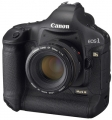

器材库 > 35mm画幅可换镜头数码相机 > EOS-1Ds Mark III

规格总览
产品类型
35mm画幅可换镜头数码相机
发布日期
2007-08-20
厂家推荐价格
52,149.00 （人民币）
影像规格
影像传感器
CMOS
影像传感器尺寸
36 × 24mm
总像素
2190万
有效像素
2110万
影像处理器
DIGIC III × 2
色彩滤镜
RGB原色滤镜
低通滤镜
位于图像感应器前，固定式
色彩空间
sRGB、Adobe RGB
最大解像度
5616×3744
静态图像格式
JPEG, RAW, RAW+JPEG
静态图像尺寸
5616×3744；4992×3328；4080×2720；2784×1856
画幅比
3:2
除尘系统
(1)自动清洁感应器 (2)用户启动清洁感应器 (3)除尘数据添加到拍摄的图像
镜头和对焦
镜头卡口
Canon EF
兼容镜头
佳能EF系列镜头(EF-S系列镜头除外) (实际镜头焦距效果等同于镜头上的焦距标识)
对焦系统类型
TTL-AREA-SIR CMOS
对焦点
19个自动对焦点(十字型)和26个辅助自动对焦点(共45个点)
对焦模式
单次自动对焦(ONE SHOT)、人工智能伺服自动对焦(AI SERVO)、手动对焦(MF)
自动对焦点选择
自动, 手动
所选自动对焦点显示
在取景器中叠加显示，并在机顶液晶显示屏上显示
手动对焦
支持
曝光控制
测光模式
中央重点测光, 评价测光, 点测光, 局部测光
测光范围
0EV~20EV
快门类型
电子控制，纵走式，焦平面快门
快门速度
1/8000至30秒，B门(快门速度总范围。可用范围因拍摄模式而异。)闪光同步速度1/250秒
曝光补偿
±3EV以1/3或1/2EV级调整
自动曝光锁
有
自动包围曝光
在±3级间以1/3或1/2级为单位调节
连拍
每秒5张（高速）/ 3张（低速），最多56张JPEG（大） 或 12张RAW 或 10张RAW+JPEG（大）
闪光灯
闪光补偿
±3EV以1/3或1/2EV级调整
外接闪光灯
EX系列闪光灯
PC端子
有
取景器/显示屏
取景器
眼平五棱取景器
取景范围
100%
取景放大倍率
0.76倍
屈光度调节范围
-3.0 ~ +1.0
反光镜
快速瞬回半透明
取景器信息
自动对焦信息、测光和曝光信息(测光模式、点测光圆、快门速度、光圈值、手动曝光、自动曝光锁、ISO感光度、曝光量、曝光警告)、闪光信息、白平衡矫正、JPEG/RAW记录、最大连拍数量、剩余可拍摄数量、电池电量检测、记录媒体信息
景深预视
有
LCD类型
彩色TFT LCD
LCD尺寸
3.0英寸
LCD像素
23万
视野率
100%
亮度调节级数
7级
Live View
有
Live View 显示
网格线显示，曝光虚拟，自动对焦点处可放大5倍或10倍
Live View 对焦模式
手动对焦
文件输入/输出
存储卡
CF, SD/SDHC
数据接口
USB
视频/音频接口
Video 输出 (NTSC/PAL)
支持打印协议
PictBridge
电源
电池
一节LP-E4锂电池
续航能力
23℃/73℉：约1800张； 0℃/32℉：约1400张
外接电源
交流电适配器套装ACK-E4
机身规格
材质
镁合金机身
颜色
黑色
尺寸
156 × 159.6 × 79.9mm
重量
1210g
其它
用户自选功能
共57个
支持语言
中文（简体）
工作温度
0-45℃
工作湿度
低于或等于85%
附件
EOS数码处理光盘，软件使用手册光盘，交流电适配器套装ACK-E4，电池充电器LC-E4，锂电池LP-E4，USB电缆保护器，宽背带L6，视频电缆VC-100，USB接口连接电缆IFC-200U、IFC-500U
软件
EOS Utility，Digital Photo Professional，Picture Style Editor
备注
菜单语言18种(含简体中文)；具有十分出色的防尘防水滴性能
小广咪咪2016-10-10 12:174.63 分
操作性 5.00功能性 4.00美观性 5.00趣味性 4.50耐用性 5.00性价比 4.00解像力 4.50色彩还原 5.00
dl2300zxh2016-10-09 17:134.88 分
操作性 5.00功能性 4.50美观性 5.00趣味性 4.50耐用性 5.00性价比 5.00解像力 5.00色彩还原 5.00
cybertron2016-03-06 20:045 分
操作性 5.00功能性 5.00美观性 5.00趣味性 5.00耐用性 5.00性价比 5.00解像力 5.00色彩还原 5.00
nk58186992015-09-09 09:273.88 分
操作性 5.00功能性 5.00美观性 3.00趣味性 0.50耐用性 5.00性价比 3.50解像力 4.00色彩还原 5.00
无事生费2015-07-28 18:154.88 分
操作性 5.00功能性 5.00美观性 5.00趣味性 4.50耐用性 5.00性价比 4.50解像力 5.00色彩还原 5.00
amphysics2014-07-21 23:294.88 分
操作性 4.00功能性 5.00美观性 5.00趣味性 5.00耐用性 5.00性价比 5.00解像力 5.00色彩还原 5.00
pinhe2014-03-10 21:304.69 分
操作性 5.00功能性 5.00美观性 5.00趣味性 4.50耐用性 5.00性价比 3.50解像力 5.00色彩还原 4.50
喜欢小麦穗2013-09-03 06:454.63 分
操作性 5.00功能性 4.50美观性 5.00趣味性 4.50耐用性 5.00性价比 4.00解像力 4.50色彩还原 4.50
wangh88882013-09-01 20:354.88 分
操作性 5.00功能性 5.00美观性 5.00趣味性 5.00耐用性 5.00性价比 4.00解像力 5.00色彩还原 5.00
yusan96812013-04-27 21:014.81 分
操作性 5.00功能性 5.00美观性 5.00趣味性 5.00耐用性 5.00性价比 3.50解像力 5.00色彩还原 5.00
枫叶枫叶2012-12-02 17:244.38 分
操作性 5.00功能性 5.00美观性 5.00趣味性 5.00耐用性 5.00性价比 4.00解像力 4.50色彩还原 1.50
v2082012-06-17 21:504.44 分
操作性 5.00功能性 4.50美观性 4.50趣味性 4.00耐用性 4.50性价比 3.00解像力 5.00色彩还原 5.00
sunxun272012-04-18 21:034.81 分
操作性 5.00功能性 4.50美观性 5.00趣味性 4.50耐用性 5.00性价比 4.50解像力 5.00色彩还原 5.00
一直走下去2012-04-14 16:52
冰雪骄子2011-11-26 22:475 分
操作性 5.00功能性 5.00美观性 5.00趣味性 5.00耐用性 5.00性价比 5.00解像力 5.00色彩还原 5.00
管道万里行2011-05-10 21:534.25 分
操作性 4.50功能性 4.00美观性 5.00趣味性 4.50耐用性 4.50性价比 2.50解像力 4.50色彩还原 4.50
影色无限2011-03-12 13:344.75 分
操作性 5.00功能性 4.50美观性 5.00趣味性 4.50耐用性 5.00性价比 4.50解像力 5.00色彩还原 4.50
victor4u2011-02-10 22:484.63 分
操作性 5.00功能性 5.00美观性 4.50趣味性 4.00耐用性 5.00性价比 4.00解像力 5.00色彩还原 4.50
丛林日记20082010-11-05 19:444.63 分
操作性 4.50功能性 4.50美观性 5.00趣味性 4.50耐用性 4.50性价比 4.00解像力 5.00色彩还原 5.00
rewindyee2010-11-04 18:244.81 分
操作性 5.00功能性 4.50美观性 5.00趣味性 4.00耐用性 5.00性价比 5.00解像力 5.00色彩还原 5.00
一刀鲜2010-08-24 09:434.25 分
操作性 4.50功能性 4.50美观性 5.00趣味性 4.00耐用性 4.50性价比 2.50解像力 4.50色彩还原 4.50
sokya2010-04-20 21:044.56 分
操作性 4.50功能性 5.00美观性 5.00趣味性 4.00耐用性 5.00性价比 3.50解像力 5.00色彩还原 4.50
Pantrol2010-01-17 22:434.38 分
操作性 4.00功能性 5.00美观性 5.00趣味性 4.00耐用性 5.00性价比 4.00解像力 4.00色彩还原 4.00
city8781982009-11-21 23:084.75 分
操作性 5.00功能性 5.00美观性 4.50趣味性 5.00耐用性 5.00性价比 3.50解像力 5.00色彩还原 5.00
听山风2009-08-04 16:524.88 分
操作性 5.00功能性 5.00美观性 5.00趣味性 4.50耐用性 5.00性价比 4.50解像力 5.00色彩还原 5.00
产品图 / 样片
eos-1ds-markiii-01
评测 / 相关文章
- 详细内容 （存档）
- 佳能EOS 1Ds Mark III使用感受 （存档）
- ［试用］自5D到1Ds3 一路走来追寻极致画质 （存档）
- ［资讯］探秘EOS传奇（上） （存档）
- ［资讯］佳能专访：将继续推出1Ds高端新品 （存档）
- ［专题］何日话别？最该退役的那些单反们 （存档）
- ［行情］顶级单反1Ds Mark III售价42990 （存档）
- ［行情］突降5千，1Ds Mark III离奇走低 （存档）
- ［资讯］1D/1Ds MarkIII免费调整AF精度 （存档）
- ［资讯］1D/1Ds MarkIII固件升级：v1.1.4 （存档）
- ［资讯］a900与1Ds MarkIII噪点表现PK （存档）
- ［行情］D3x杀到，1Ds MarkIII遭遇价格夹击 （存档）
相关文章
- ［试用］自5D到1Ds3 一路走来追寻极致画质 （存档）
- ［资讯］探秘EOS传奇（上） （存档）
- ［资讯］佳能专访：将继续推出1Ds高端新品 （存档）
- ［专题］何日话别？最该退役的那些单反们 （存档）
- ［行情］顶级单反1Ds Mark III售价42990 （存档）
- ［行情］突降5千，1Ds Mark III离奇走低 （存档）
- ［资讯］1D/1Ds MarkIII免费调整AF精度 （存档）
- ［资讯］1D/1Ds MarkIII固件升级：v1.1.4 （存档）
- ［资讯］a900与1Ds MarkIII噪点表现PK （存档）
- ［行情］D3x杀到，1Ds MarkIII遭遇价格夹击 （存档）
- ［试用］佳能EOS 1Ds Mark III使用感受 （存档）